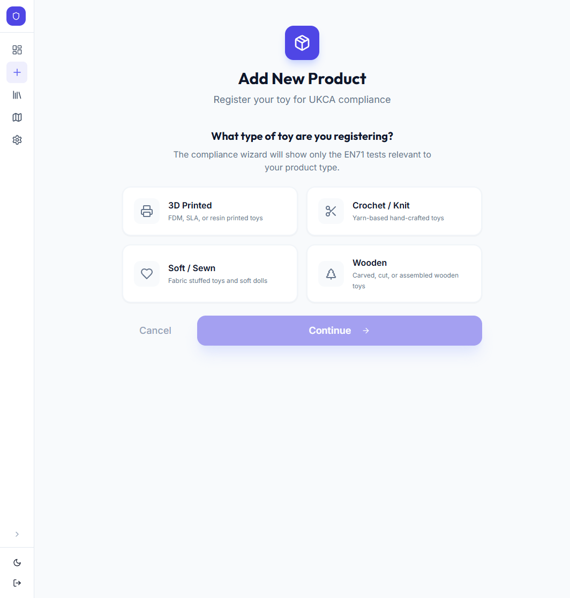
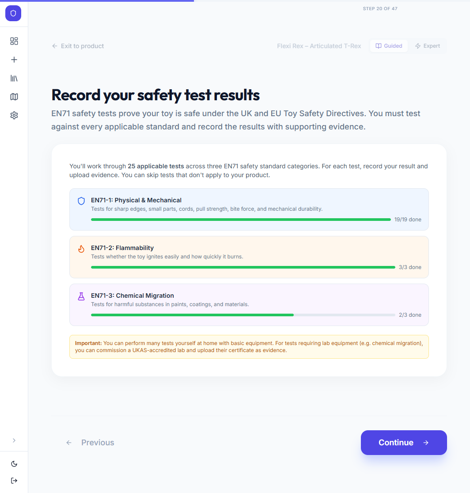
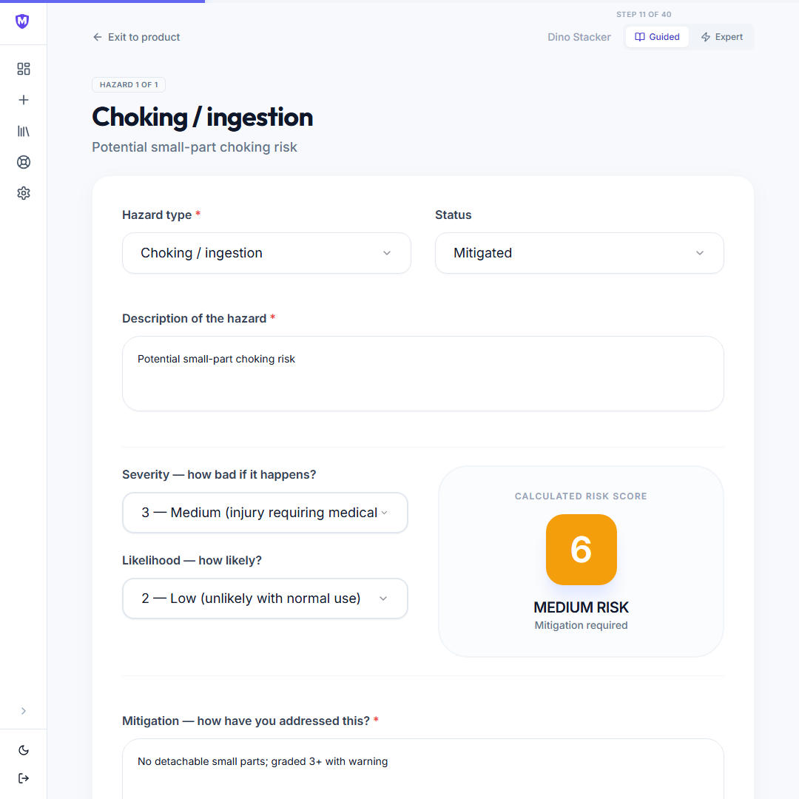
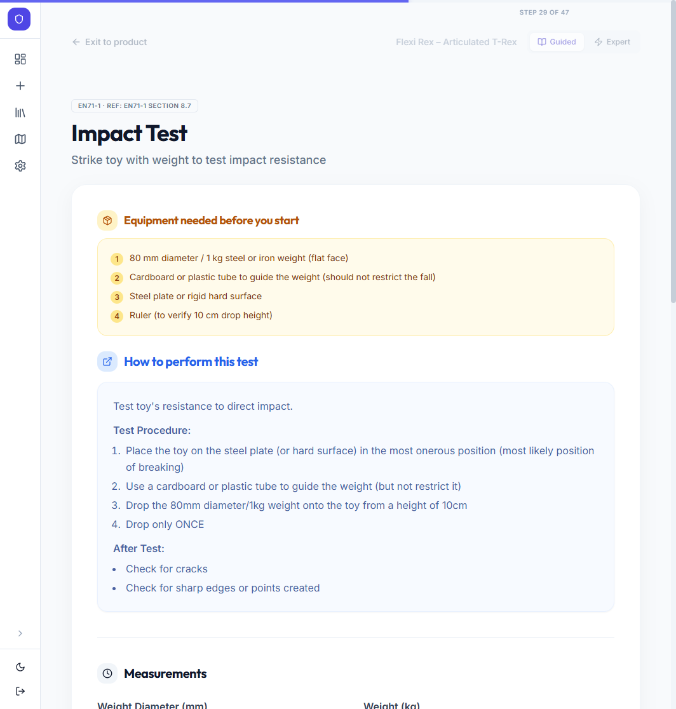
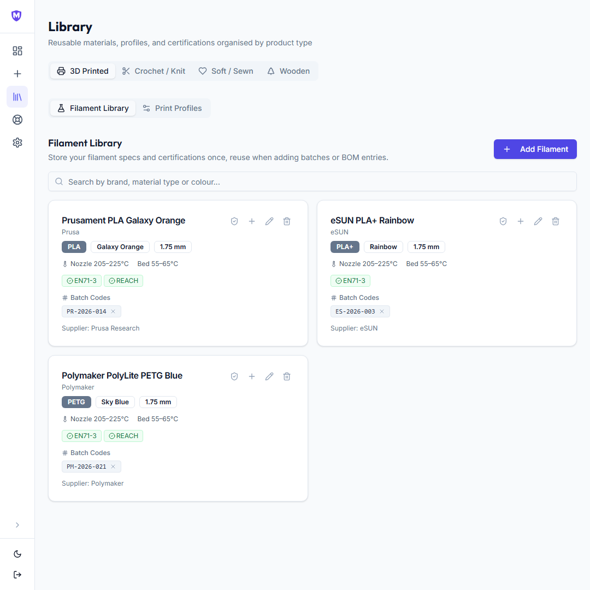
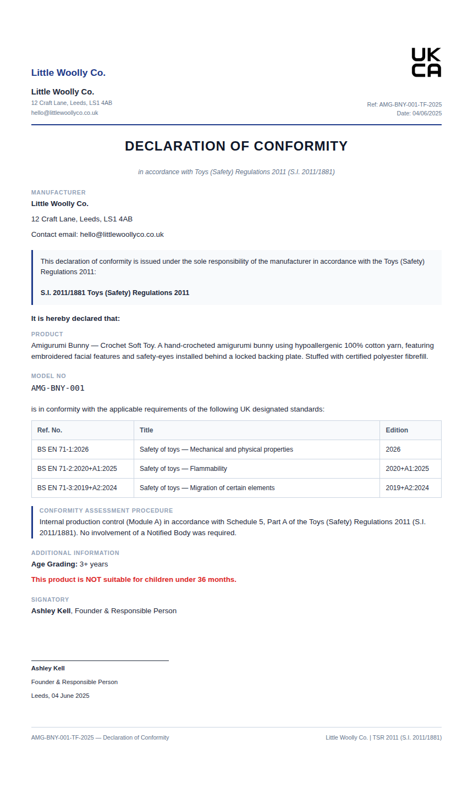
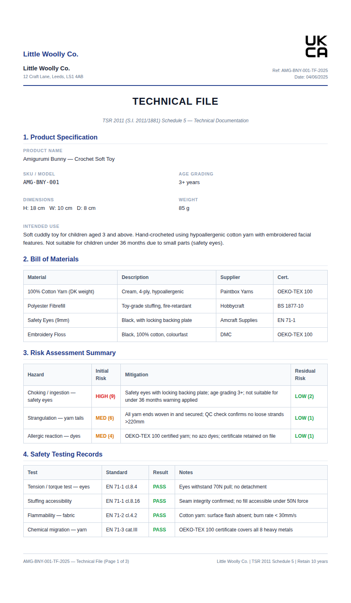

MakerSafe gives you everything you need to comply with UK toy safety law: a guided EN71 testing wizard, a material library with batch tracking, a testing tracker, and professional document generation. All in one place, all in plain English.
No compliance experience needed — work through it at your own pace
No spam. Just one email when MakerSafe is ready. Affordable for sole traders — pricing announced at launch.
You sell handmade toys on Etsy, at craft fairs, or through your own shop, and you want to do it properly, with the paperwork to prove it.
You make them yourself: 3D printing, crocheting, sewing, or woodworking. You know your craft. EN71 safety standards feel like a different world.
You've heard about UKCA compliance and declarations of conformity, but figuring out where to start, and what counts as evidence, feels overwhelming.
MakerSafe is built for you.
The Toys (Safety) Regulations 2011 apply to every toy sold in the UK, however it's made or sold. Here's what's at stake if you skip it.
Already selling without compliance? MakerSafe helps you get compliant from today. You can't backdate evidence, but you can start building a proper Technical File right now and protect yourself going forward. Many of our users started exactly where you are.
Our wizard guides you through defining your product, identifying risks, completing EN71 testing, recording results and evidence, and generating your compliance documents. One step at a time.

MakerSafe isn't just documentation software. It's a set of tools that work together, each designed for a specific part of the compliance process.
The guided wizard walks you through every section of your technical file one card at a time. No compliance experience needed. Switch to expert mode any time to see all fields at once.


For each hazard, record severity and likelihood before and after your mitigation. MakerSafe calculates both risk scores and flags anything that needs further attention, so your Technical File tells the complete story.
MakerSafe shows only the EN71 tests relevant to your product type and age grading. Each test card explains exactly what equipment you need, how to perform the test, and what counts as a pass, so you can run the tests yourself with confidence.


Build a library of every material you use. Attach EN71 certificates and batch codes to each entry, then pull them straight into product bills of materials. Batch codes linked to a product are highlighted in amber. Click them to find the product instantly. No re-entering the same filament or yarn twice.
Everything required under TSR 2011 Schedule 5, generated from the data you've already entered in the wizard.


Built to the letter of UK law
Every document (Declaration of Conformity, Technical File, and batch labels) maps directly to the requirements of the Toys (Safety) Regulations 2011 (S.I. 2011/1881).
Developed with local authorities
We're working with Trading Standards officers to make sure what MakerSafe produces matches what they actually expect to see from small manufacturers.
Honest about its limits
MakerSafe is a documentation tool, not a rubber stamp. It tells you clearly what it does and doesn't cover, and won't let you generate documents without the evidence to back them up.
Quotes from beta users will appear here. If you've tried MakerSafe and want to share your experience, get in touch.
The questions we hear most often from makers who are new to UKCA compliance.
Your compliance data is sensitive business information. Here's how MakerSafe handles it.
MakerSafe is launching soon. Leave your email and we'll send you one notification the moment it's ready, along with a summary of everything the tools do.
No spam. Just one email when MakerSafe is ready.